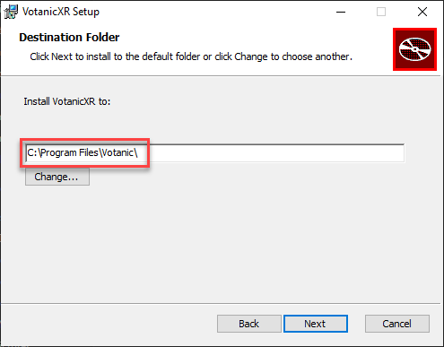
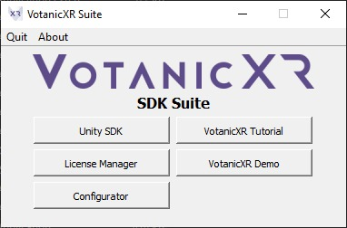

Installation Guide
VotanicXR is distributed as the VotanicXR Suite, a link to download the VotanicXR Suite is included in the license activation email sent to you alongside your activation license information. Please download the VotanicXR Suite installer before proceed to the rest of the guide.
Installation
Please double click the VotanicXR SDK installation file to launch the installer:

By default, the VotanicXR Suite will be installed to C:\Program Files\Votanic\ . If you would like to install it elsewhere, please change it at this step.
VotanicXR will use this path in some features of the software, make sure you do not move the folder after the installation process.
After chosen the installation directory, press "Install" to install VotanicXR (admin privilege required) and wait for the installation process to complete. The required shared code libraries will also be installed automatically at this step.
The VotanicXR Suite shortcut will be added to your desktop after installation is completed.
VotanicXR Suite
Double-click the desktop icon to launch the VotanicXR Suite.

The VotanicXR Suite provides quick access to the main features of VotanicXR. Press the buttons to access the features respectively.
Press "X" to minimise VotanicXR Suite to System Tray, it will remain running in the background. Press "Quit" to exit VotanicXR Suite completely.

License Key Activation
Launch the Votanic License Manager.
Select "Activate" on the bottom-left corner.
From the Activation dialog, input your license key in the text box and press "Activation"
The newly activated license will be shown in the App List.
Play VotanicXR Feature Demo
The VotanicXR feature demo is available for play after installing the VotanicXR Suite.
Select VotanicXR Demo will open the VotanicXR feature demo folder shown below:
Two versions of the feature demo are provided. For playback on your Windows PC, double-click the VotanicXR_[PC][XR] batch file; for playback on a supported HMD system, double-click the VotanicXR_[HMD][XR] batch file. The feature demo will play in your selected platform. Note that if you have SteamVR installed on your PC, please run it at least once and complete the SteamVR Room Setup before opening the feature demo.
After the feature demo is loaded, follow the on-screen instructions, and try out different VotanicXR features yourself.
VotanicXR Unity SDK Installation
The Unity SDK installation guide is provided in the Quick Start chapter of the Tutorial series.